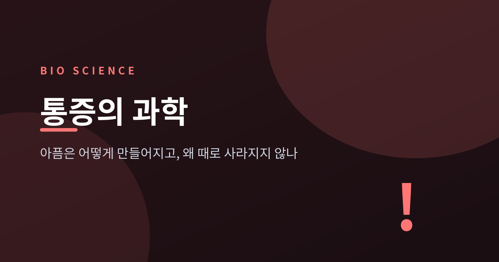
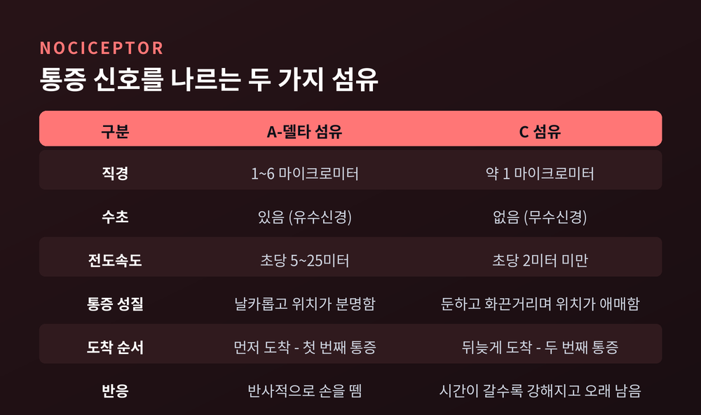
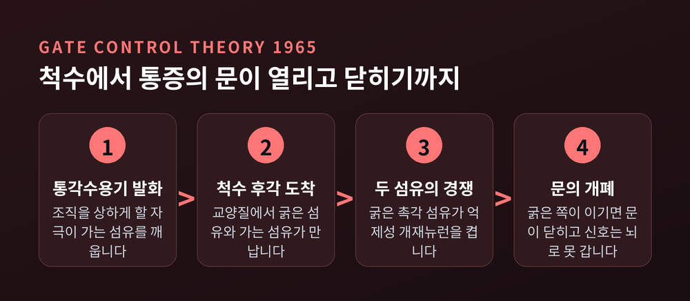
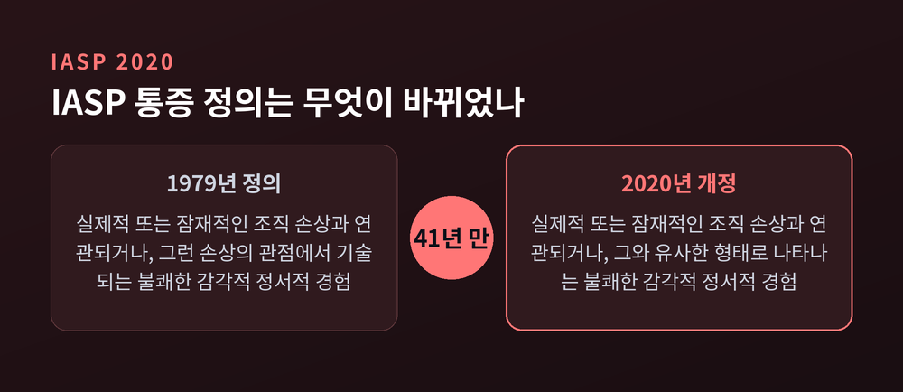
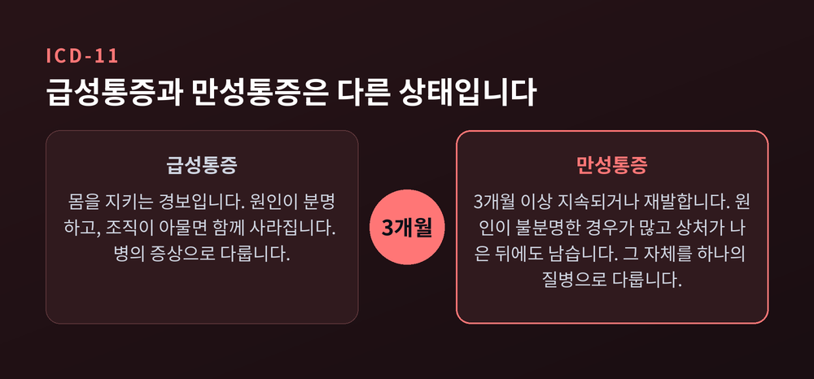
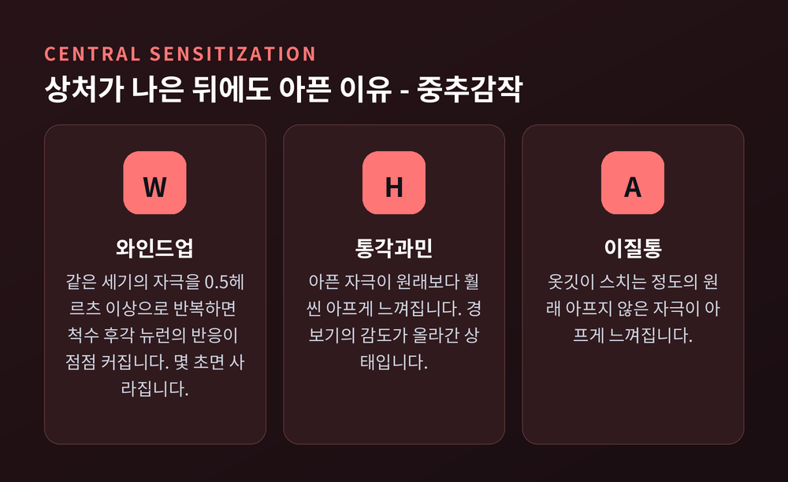

이번 글에서는 통증이 몸에서 어떻게 만들어지는지, 그리고 왜 어떤 통증은 상처가 아문 뒤에도 남는지를 정리해 보겠습니다.
먼저 결론부터 세 줄로 요약합니다.
통증은 상처에서 올라오는 신호가 아니라 뇌가 만들어내는 결론입니다.
그래서 조직 손상의 크기와 아픔의 크기는 비례하지 않습니다.
만성통증은 오래 끄는 증상이 아니라, 경보 장치 자체가 고장 난 별개의 상태에 가깝습니다.
손가락을 문틈에 찧으면 두 겹의 아픔이 옵니다. 먼저 "따끔"이 오고, 조금 뒤 "욱신"이 옵니다.
착각이 아닙니다. 서로 다른 신경섬유가 서로 다른 속도로 도착한 결과입니다.
피부와 근육, 내장에는 통각수용기(nociceptor)라는 감각 말단이 깔려 있습니다. 조직을 상하게 할 만한 자극에 반응하는 센서입니다. 여기서 출발한 신호는 두 종류의 섬유를 타고 올라갑니다.
A-델타 섬유는 직경 1~6 마이크로미터의 얇은 유수신경입니다. 전도속도가 초당 5~25미터에 이릅니다. 날카롭고 위치가 분명한 첫 번째 통증을 나릅니다. 손을 반사적으로 떼게 만드는 것이 이 신호입니다.
C 섬유는 직경 1마이크로미터 안팎의 무수신경입니다. 속도는 초당 2미터를 넘지 않습니다. 둔하고 화끈거리며 어디가 아픈지 애매한 두 번째 통증이 여기서 옵니다. 시간이 갈수록 강해지고 오래 남습니다.
같은 손가락에서 출발했는데 도착 시간이 열 배 넘게 차이 납니다. 그 시차가 "따끔" 다음의 "욱신"입니다.

통각수용기가 없으면 어떻게 될까요. 2006년 콕스(Cox) 연구진이 네이처에 보고한 사례가 답을 줍니다. 파키스탄 북부의 세 가계에서 통증을 전혀 느끼지 못하는 사람들을 조사했더니, 나트륨 채널 Nav1.7을 만드는 SCN9A 유전자에 기능 상실 돌연변이가 있었습니다.
이들은 신경계도 지능도 정상이고 건강합니다. 다만 사고를 당하고, 다친 줄 모르고, 감염을 놓칩니다.
통증이 없는 삶은 축복이 아니었습니다.
부딪힌 곳을 손으로 문지르면 덜 아픕니다. 다들 아는 사실인데, 여기에는 이름이 붙어 있습니다.
1965년 로널드 멜잭(Ronald Melzack)과 패트릭 월(Patrick Wall)이 사이언스지에 관문통제이론(Gate Control Theory)을 발표했습니다. 통증 연구의 판을 뒤집은 논문으로 평가받습니다.
두 사람은 척수 뒤쪽 후각(dorsal horn)의 교양질에 일종의 문이 있다고 보았습니다. 통증을 나르지 않는 굵은 A-베타 섬유가 활동하면, 억제성 개재뉴런을 통해 가는 통각 섬유의 신호 전달을 막는다는 것입니다.
굵은 섬유와 가는 섬유가 척수에서 경쟁합니다. 굵은 쪽이 이기면 문이 닫히고, 신호는 뇌까지 올라가지 못합니다.
문지르기는 촉각 섬유를 자극해 문을 닫는 행위였습니다. 경피 전기신경자극(TENS)이나 척수자극술도 여기서 출발했습니다.
다만 이 이론이 전부는 아니었습니다. 원래 제안된 회로도는 이후 실험에서 일부 수정이 필요했고, 뒤에 나올 환상지통 같은 현상은 관문통제만으로 설명되지 않았습니다. 멜잭 본인이 나중에 신경매트릭스 이론으로 개념을 확장한 이유입니다.

문은 아래에서만 조작되지 않습니다. 뇌에서 척수로 내려가는 회로가 따로 있습니다.
중뇌의 수도관주위회백질(PAG)에서 연수의 문측복내측부(RVM)를 거쳐 척수 후각으로 이어지는 축입니다. RVM에는 통증 전달을 억제하는 OFF 세포와 촉진하는 ON 세포가 함께 있습니다. 세로토닌과 오피오이드를 써서 양방향으로 조절합니다.
같은 자극이라도 주의와 기대, 정서 상태에 따라 척수 단계에서 이미 볼륨이 조정됩니다.
한동안 연구자들은 1차·2차 체성감각피질과 섬엽, 전대상피질로 이루어진 네트워크를 통증 매트릭스(pain matrix)라 부르며 통증의 고유한 뇌 서명으로 여겼습니다.
이 관점에 정면으로 도전한 것이 이아네티(Iannetti)와 무로(Mouraux)의 연구입니다. 이 네트워크가 통각에 특이적이라는 설득력 있는 증거가 없다는 지적이었습니다.
근거는 단순합니다. 아프지 않은 자극이라도 충분히 두드러지면 거의 같은 뇌 반응이 나옵니다. 통증 전용 회로가 아니라 '주의를 끄는 자극'을 처리하는 범용 회로에 가깝다는 것입니다.
지금은 이쪽이 다수 견해에 가깝습니다. 물론 논쟁은 끝나지 않았습니다.
정리하면, 뇌에는 통증만 담당하는 단일한 자리가 없습니다. 통증은 감각 입력과 기억, 기대, 정서, 맥락이 함께 만들어내는 구성된 경험입니다.
이 관점이 공식 정의로 들어온 것이 2020년입니다. 국제통증연구학회(IASP)는 1979년 이후 41년 만에 통증의 정의를 개정했습니다.
"실제적 또는 잠재적인 조직 손상과 연관되거나, 그와 유사한 형태로 나타나는 불쾌한 감각적·정서적 경험"
바뀐 대목은 뒤쪽입니다. 예전 정의는 "그런 손상의 관점에서 기술되는"이었습니다. 지금은 "그와 유사한 형태로 나타나는"입니다. 조직 손상이 없어도 통증은 통증이라는 뜻입니다.
개정에는 여섯 개의 주석이 붙었습니다. 그중 두 개가 특히 무겁습니다. "통증과 통각은 다른 현상이다. 감각뉴런의 활동만으로 통증을 추론할 수 없다." 그리고 "통증을 보고하는 개인의 진술은 존중되어야 한다."
말로 표현하지 못한다고 아프지 않은 것이 아닙니다. 신생아와 치매 환자를 배제하던 낡은 문장이 그렇게 정리됐습니다.

마취과 의사 헨리 비처(Henry Beecher)는 1946년 논문에서 북아프리카와 유럽 전선의 중상 병사 200명 이상을 관찰한 결과를 보고했습니다.
심하게 다친 병사의 약 4분의 3이 통증이 거의 없어 모르핀을 거절했습니다.
부상의 중증도와 통증의 강도는 상관하지 않았습니다. 반대 사례도 있었습니다. 흉부 관통상으로 몸부림치던 젊은 병사를 두고, 비처는 상처보다 불안이 통증을 키우고 있다고 판단했습니다.
통증은 조직에서 올라오는 신호이면서, 동시에 그 신호를 조절하는 정서적 경험이었습니다.
이 관찰은 위약 진통 연구로 이어졌습니다. 1978년 러바인(Levine), 고든(Gordon), 필즈(Fields)는 랜싯에 짧은 논문 하나를 실었습니다. 위약에 반응한 환자에게 오피오이드 길항제 날록손을 투여하자, 위약의 진통 효과가 뒤집혔습니다.
위약 진통이 뇌가 실제로 분비한 내인성 오피오이드 때문이었다는 뜻입니다. 기분 탓이 아니라 약리 현상이었습니다.
이 연구의 설계에는 결함이 있었고 대안적 해석의 여지를 남겼다는 비판도 함께 받습니다. 다만 이 논문이 더 엄격한 후속 연구들을 촉발했다는 평가에는 이견이 적습니다. 이후 아만치오와 베네데티(1999)는 기대로 활성화되는 오피오이드계와 조건화로 활성화되는 별도 시스템을 약리학적으로 분리해 보였습니다.
가장 확실한 증거는 환상지통입니다.
절단 후 없어진 팔다리가 아픈 현상입니다. 유병률은 연구에 따라 50~80% 안팎으로 보고되며, 조사 방식에 따라 49~88%까지 폭이 벌어집니다. 삶의 질을 심각하게 떨어뜨립니다.
유력한 설명은 피질 재조직화입니다. 사지가 사라지면 그 부위를 담당하던 뇌 영역이 입력을 잃습니다. 인접 영역의 활동이 그 빈자리로 침범해 들어가고, 이 재편이 통증으로 이어진다고 봅니다.
거울치료는 이 가설에서 나왔습니다. 거울에 비친 성한 팔의 상을 없는 팔 자리에서 보게 해, 시각 입력과 고유수용감각 입력의 어긋남을 메워주는 방법입니다.
효과는 아직 논쟁 중입니다. 여러 문헌 리뷰가 통증 감소를 보고했습니다만, 무작위 위약대조 시험만 모아 분석한 체계적 문헌고찰에서는 효능의 근거를 찾지 못했습니다. 아직 결론이 나지 않았다고 적는 편이 정직합니다.
그래도 한 가지는 분명합니다. 조직이 아예 없는데도 아플 수 있다면, 통증의 자리는 상처가 아니라 뇌입니다.
세계보건기구는 ICD-11에서 국제통증연구학회와 함께 만성통증을 처음으로 체계적으로 분류했습니다.
만성통증의 기준은 3개월입니다. 3개월 이상 지속되거나 재발하는 통증입니다.
ICD-11은 만성통증을 일곱 범주로 나눴습니다. 만성 일차성 통증, 암성 통증, 외상후·수술후 통증, 신경병증성 통증, 두통 및 구강안면통, 내장통, 근골격계 통증입니다.
이 중 만성 일차성 통증이 흥미롭습니다. 3개월 넘게 이어지고, 유의한 정서적 고통이나 기능 장애를 동반하며, 다른 질환으로 더 잘 설명되지 않는 통증입니다. 섬유근육통, 원인 불명의 요통, 과민성 장증후군이 여기 들어갑니다.
원인이 아니라 양상으로 정의한 것이 핵심입니다. 많은 만성통증의 원인이 아직 밝혀지지 않았기 때문입니다.
예전엔 통증을 병의 증상으로만 봤습니다. 지금은 만성통증 자체를 하나의 질병으로 다룹니다.
규모도 작지 않습니다. 미국 질병통제예방센터(CDC) 국립보건통계센터가 2023년 국민건강면접조사를 분석한 결과, 미국 성인의 24.3%가 만성통증을 겪었고 8.5%는 일상 활동이 제한되는 고충격 만성통증이었습니다. 여성이 25.4%로 남성 23.2%보다 높았습니다.
넷 중 하나입니다. 드문 일이 아닙니다.

상처가 다 나았는데 왜 아플까요. 척수와 뇌에서 일어나는 중추감작(central sensitization)이 유력한 답입니다.
먼저 실험실 현상 하나를 봅니다. C 섬유에 같은 세기의 자극을 0.5헤르츠 이상으로 반복하면, 척수 후각 뉴런의 반응이 점점 커집니다. 와인드업(wind-up)입니다.
기전은 이렇습니다. 서브스탠스 P와 CGRP가 작용해 막 탈분극이 누적되고, 그것이 NMDA 수용체를 막고 있던 마그네슘 마개를 빼냅니다. 마개가 빠지면 수용체가 열리고 반응이 증폭됩니다.
다만 와인드업은 마지막 자극 후 몇 초면 사라집니다. 임상적 중요성은 아직 논쟁 중입니다.
문제는 중추감작입니다. 우프(Woolf)의 정의를 빌리면 "중추신경 가소성에 의한 통증 과민성의 발생기"입니다. 말초 염증이나 신경 손상 뒤에 후각으로 방출되는 BDNF, 산화질소 같은 물질이 방아쇠가 됩니다. 와인드업과 달리 훨씬 오래 갑니다.
결과는 두 가지로 나타납니다.
경보기의 배선이 바뀐 상태입니다. 화재는 진압됐는데 감지기가 계속 울립니다.
2017년 국제통증연구학회는 이런 통증을 담기 위해 세 번째 기전 분류를 채택했습니다. 통각가소성 통증(nociplastic pain)입니다. 조직 손상의 증거도, 체성감각계 병변의 증거도 없는데 변화된 통각에서 발생하는 통증을 가리킵니다. 섬유근육통과 복합부위통증증후군 1형이 대표적입니다.
개념의 경계가 모호하다는 비판도 학계에 있습니다. 아직 다듬어지는 중인 분류라고 보는 편이 맞겠습니다.

통증의 정서·인지 요소는 곁가지가 아닙니다. 결과를 바꾸는 변수입니다.
통증 파국화(pain catastrophizing)는 통증 예후를 예측하는 가장 강력한 심리적 인자로 꼽힙니다. 파국화가 높으면 장애가 크고, 통증 강도가 높고, 우울과 불안이 따르고, 결근과 오피오이드 오용, 의료 이용이 늘어납니다.
공포회피 모델은 그 경로를 그려 보입니다. 통증을 파국적으로 해석하면 재손상에 대한 극심한 공포가 생기고, 공포는 움직임 자체로 번지고, 결국 활동을 전면 회피하게 됩니다. 안 쓰면 약해지고, 약해지면 더 아픕니다.
근거도 쌓여 있습니다. 공포회피 신념은 작업환경 요인을 통제한 뒤에도 요통으로 인한 병가 일수를 유의하게 예측했습니다. 수술 전 파국화 점수는 수술 후 통증과 회복 기간을 함께 예측했습니다.
2020년 정의가 통증을 "감각적·정서적 경험"이라 못 박은 이유가 여기 있습니다. 감정은 통증에 얹힌 장식이 아니라 통증의 구성 요소입니다.
정리하면 이렇습니다.
통증은 상처가 보내는 보고서가 아니라, 뇌가 그 순간의 모든 정보를 모아 내리는 판단입니다. 판단이니까 틀릴 수 있습니다. 상처가 커도 안 아플 수 있고, 상처가 없어도 아플 수 있습니다.
"아픔은 상처에서 오는 것이 아니라, 몸이 위험하다고 결론 내릴 때 온다."
그러니 오래 아픈 분께 "검사에서 아무것도 안 나왔다"는 말은 위로가 되지 않습니다. 나올 것이 없는 통증이 실재하기 때문입니다. 2020년의 정의가 굳이 한 줄을 더 붙인 것도 그래서입니다 — 통증을 보고하는 사람의 말은 존중되어야 한다고.
아픔이 마음의 문제냐고 물으신다면, 저는 이렇게 답하겠습니다. 마음의 문제가 아니라, 마음까지 포함한 몸 전체의 문제라고.
※ 이 글은 일반적인 건강 정보를 정리한 것입니다. 개인의 통증은 원인과 양상이 저마다 다릅니다. 진단과 치료에 관한 판단은 반드시 의료진과 상담하시기 바랍니다. 특히 3개월 이상 이어지는 통증이나 원인을 알 수 없는 통증은 혼자 견디지 마시고 전문의를 찾으시길 권합니다.